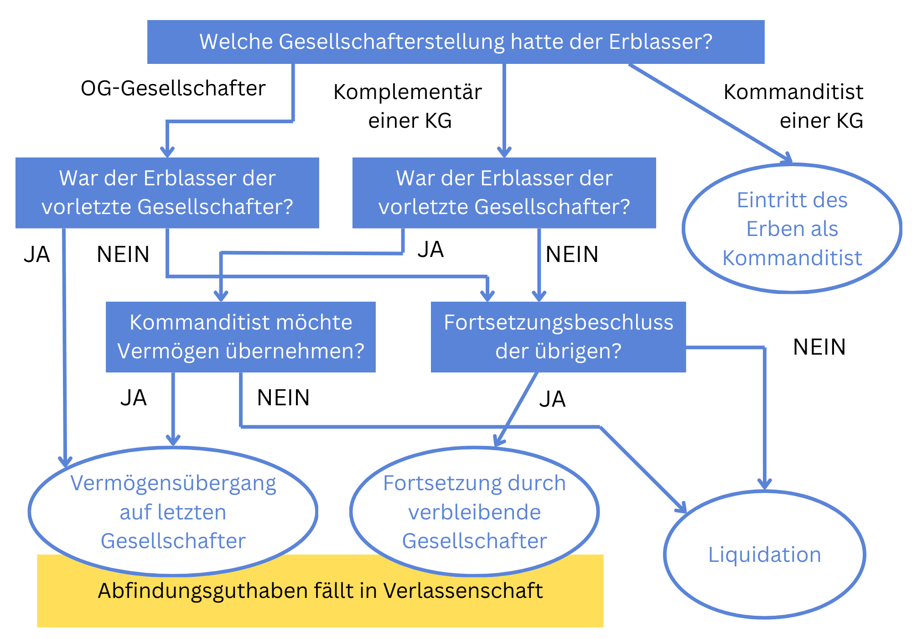

Das Schicksal von OG- und KG-Anteilen in der Verlassenschaft
Die Übertragung von Anteilen an einer Personengesellschaft (OG, KG) stellt die Erben vor eine Vielzahl rechtlicher Fragestellungen. Wie verhält es sich mit der Haftung der Erben für Verbindlichkeiten der Gesellschaft? Welche Rechte und Pflichten treten mit dem Erbfall ein, und wie gestaltet sich die Rechtsnachfolge in der Personengesellschaft? Dieser Beitrag beleuchtet die komplexen Aspekte der Erbenhaftung und die Auswirkungen der Erbfolge auf die Gesellschafterstruktur. Bevor eine Erbschaft, die einen OG-Anteile oder KG-Anteil enthält, angetreten wird, sollte von den Erben umsichtig die Vorgehensweise geklärt werden, um rechtliche Risiken zu vermeiden.
Grundsätzliches zu den Rechtsfolgen beim Tod eines Gesellschafters
Zunächst ist hinsichtlich der Rechtsfolgen danach zu differenzieren, ob der Erblasser Gesellschafter einer Offenen Gesellschaft (OG) oder einer Kommanditgesellschaft (KG) war, zumal diese je nach Gesellschafterstellung teilweise unterschiedlich sind.
Kommt es zum Tod eines OG-Gesellschafters, so folgt daraus grundsätzlich die Auflösung der Gesellschaft, sofern der Gesellschaftsvertrag nichts anderes bestimmt (§ 131 Z 4 UGB). Selbiges gilt für den Tod eines Komplementärs einer KG. Es ist daher empfehlenswert, bereits im Gesellschaftsvertrag eine Regelung über die Folgen des Todes eines Gesellschafters zu treffen. Wenn im Gesellschaftsvertrag keine solche Regelung getroffen wird, können die verbleibenden Gesellschafter dennoch einstimmig die Fortsetzung der Gesellschaft beschließen (§ 141 Abs 1 UGB). Haben die verbleibenden Gesellschafter einstimmig die Fortsetzung beschlossen, so erwirbt die Verlassenschaft einen Anspruch auf ein Auseinandersetzungsguthaben. Dies ist der wertmäßige Anteil am Reinvermögen der Personengesellschaft im Ausmaß der Beteiligung des Verstorbenen.
Durch den Tod des Kommanditisten einer KG wird die Gesellschaft hingegen prinzipiell nicht aufgelöst. Der Geschäftsanteil des Kommanditisten ist frei vererblich und die Gesellschaft wird mit dem neuen Kommanditisten fortgesetzt (§ 177 UGB). Diese gesetzliche Regelung ist jedoch dispositiv, im Gesellschaftsvertrag kann daher Abweichendes geregelt werden. So kann der Gesellschaftsvertrag etwa bestimmen, dass die Gesellschaft auch im Fall des Ablebens eines Kommanditisten aufgelöst wird oder der Anteil des Kommanditisten im Todesfall auf eine im Gesellschaftsvertrag genannte Person übergeht.
Scheidet durch den Todesfall der vorletzte Gesellschafter aus einer Personengesellschaft aus, so sieht das Gesetz vor, dass die Personengesellschaft ohne Liquidation erlischt und Vermögen sowie Verbindlichkeiten der Gesellschaft durch Gesamtrechtsnachfolge auf den verbliebenen Gesellschafter übergehen ("Anwachsung" gemäß § 142 UGB). Auch diese gesetzliche Bestimmung ist nach herrschender Ansicht jedoch dispositiv, weshalb im Gesellschaftsvertrag abweichendes geregelt werden kann.
Scheidet durch den Todesfall der einzige Komplementär aus der Gesellschaft aus, so geht das Gesellschaftsvermögen auf den letzten Kommanditisten nur dann über, wenn dieser erklärt es im Rahmen einer Gesamtrechtsnachfolge zu übernehmen oder wenn, unter mehreren Kommanditisten, zumindest einer der Kommanditisten durch gleichzeitigen Gesellschafterwechsel zum Komplementär wird. Eine Kommanditgesellschaft kann nämlich nicht ohne zumindest einen Komplementär weiterbestehen, sodass die Umwandlung in eine Komplementärstellung zum Verlust des Haftungsprivilegs des Kommanditisten führt. Ansonsten führt dies zur Liquidation der Kommanditgesellschaft.
Die nachfolgende Grafik zeigt die Rechtsfolgen des Todes eines Gesellschafters, unter der Annahme, dass keine Regelungen im Gesellschaftsvertrag getroffen wurden und die Fortsetzung mit den Erben des verstorbenen Gesellschafters nicht beabsichtigt ist:
Regelungen im Gesellschaftsvertrag betreffend Fortsetzung durch Erben
Die Gesellschaft kann unter bestimmten Bedingungen auch mit den Erben des Verstorbenen fortgeführt werden, wenn das im Gesellschaftsvertrag vorgesehen wurde (§ 139 UGB). Der Erbe kann sein Verbleiben in der Gesellschaft dabei jedoch davon abhängig machen, dass ihm die Stellung eines Kommanditisten eingeräumt wird und der ihm aus der Verlassenschaft zugefallene Anteil der Einlage als seine Kommanditeinlage anerkannt wird. Wird ein solcher Antrag von den übrigen Gesellschaftern nicht angenommen, so kann der Erbe innerhalb von 3 Monaten nach Einantwortung ohne Einhaltung einer Frist seinen Austritt aus der Gesellschaft erklären. Entscheidet sich der Erbe, aus der Gesellschaft rechtzeitig auszuscheiden oder wird er Kommanditist, so haftet er nur nach bürgerlichem Recht für bis dahin entstandene Verbindlichkeiten, d.h. je nach Art der Erbantrittserklärung (§ 139 UGB). Im Falle einer unbedingten Erbantrittserklärung wäre daher die Haftung dennoch unbeschränkt, im Falle einer bedingten Erbantrittserklärung bestünde nur eine Haftung mit dem übernommenen Vermögen.
Häufig treffen Gesellschaftsverträge Regelungen für den Fall des Ablebens eines Gesellschafters. So kann im Gesellschaftsvertrag eine sogenannte "schlichte Nachfolgeklausel" implementiert werden. Dabei wird der Gesellschaftsanteil für vererblich erklärt, wodurch der Gesellschafter durch Testament selbst seinen Nachfolger in der Gesellschaft bestimmen kann oder im Zuge der gesetzlichen Erbfolge die Erben des Gesellschafters in die Gesellschaft eintreten. Eine weitere Variante, die sich in Gesellschaftsverträgen findet, ist eine "qualifizierte Nachfolgeklausel", in Folge derer nur einer, oder ein bestimmter, der Erben in die Gesellschaft eintritt, um so die Anzahl der Gesellschafter der Personengesellschaft zu begrenzen.
Eine weitere häufig gewählte Variante der Nachfolgeregelung in Gesellschaftsverträgen ist eine "Eintrittsklausel". Hier wird im Gesellschaftsvertrag bereits eine nachfolgende Person benannt oder ein Personenkreis geregelt, aus welchem der Gesellschafter einen Nachfolger benennen kann. Der benannte Nachfolger tritt in Folge mit Erklärung der Annahme der Gesellschafterstellung in die Gesellschaft ein. Regelmäßig ist durch den Nachfolger hierfür eine Abfindung an die Verlassenschaft zu bezahlen, deren Höhe im Idealfall bereits im Gesellschaftsvertrag geregelt ist. Auch der Erlass einer Abfindungszahlung im Gesellschaftsvertrag ist jedoch zulässig, sofern dadurch nicht Pflichtteilsansprüche von Pflichtteilsberechtigten aus der Verlassenschaft beeinträchtigt werden.
Haftung des eintretenden Gesellschafters
Grundsätzlich haftet der eintretende Erbe eines OG-Gesellschafters bzw. Komplementärs für alle Verbindlichkeiten der Gesellschaft, die vor seinem Eintritt begründet wurden (§ 130 Abs 1 UGB). Das bedeutet, dass der Erbe als neuer Gesellschafter in gleicher Weise für sämtliche bestehenden Verpflichtungen der Gesellschaft verantwortlich ist, wie die ursprünglichen Gesellschafter. Dabei ist es unerheblich, ob dem Erben die Höhe oder Grundlage der Verbindlichkeiten bekannt waren, als er in die Gesellschaft eintrat.
Vor der Einantwortung des Erben haftet ausschließlich die Verlassenschaft für die Gesellschaftsschulden. Wird der Erbe nicht Gesellschafter der Personengesellschaft (etwa, weil die anderen die Fortsetzung beschließen, und die Verlassenschaft nur ein Auseinandersetzungsguthaben erhält), so haftet er nur für Altschulden der Gesellschaft, also solche, die bis zu seiner Einantwortung entstanden sind. Die Höhe seiner Haftung richtet sich dabei nach den allgemeinen erbrechtlichen Bestimmungen, also der Erbantrittserklärung. Gibt der Erbe eine bedingte Erbantrittserklärung ab, so haftet er für die Gesellschaftsschulden nur bis zur Höhe des Werts der Verlassenschaft, gibt er eine unbedingte Erbantrittserklärung ab, so haftet er für Altschulden der Gesellschaft unbeschränkt.
Diese Haftungsregelung hat zur Folge, dass der Erbe potenziell mit seinem gesamten Vermögen für die Verbindlichkeiten der Gesellschaft haftet. Dies schließt nicht nur bekannte, sondern auch unbekannte oder zukünftige Forderungen ein, die zum Zeitpunkt seines Eintritts in die Gesellschaft zumindest entstanden waren. Für den Erben bedeutet das eine erhebliche rechtliche und finanzielle Verantwortung, die vor dem Hintergrund der Unsicherheit, welche Verbindlichkeiten konkret bestehen, vom Erben einzukalkulieren ist.
Häufig ist es der Fall, dass der Erbe durch eine interne Vereinbarung mit den anderen Gesellschaftern versucht, seine Haftung zu begrenzen oder auszuschließen. Diese Vereinbarungen sind jedoch im Verhältnis zu Dritten, insbesondere gegenüber den Gläubigern der Gesellschaft, unwirksam. Das bedeutet, dass selbst wenn der Erbe und die anderen Gesellschafter eine vertragliche Regelung treffen, die die Haftung des Erben für die bestehenden Verbindlichkeiten ausschließt, diese Vereinbarung keine Wirkung gegenüber den Gläubigern der Gesellschaft entfaltet.
Hintergrund dieser Regelung ist die Rechtssicherheit und der Schutz der Gläubiger der Personengesellschaft. Denn die Gläubiger können sich darauf verlassen, dass der Erbe als neuer Gesellschafter für alle zum Zeitpunkt seines Eintritts bestehenden Verbindlichkeiten haftet. Aus diesem Grund ist es für Erben von Personengesellschaften besonders wichtig, sich vor dem Eintritt in eine bestehende Gesellschaft einen umfassenden Überblick über die finanziellen Verhältnisse der Gesellschaft zu verschaffen, um mögliche Risiken einschätzen zu können. Stellt sich heraus, dass eine Personengesellschaft überschuldet ist und die Haftung auf die Verlassenschaft durchgreift, kann es in Einzelfällen sogar sinnvoll sein, eine Erbschaft auszuschlagen.
Haftung beim Eintritt als Kommanditist
Tritt ein Erbe in eine bestehende Kommanditgesellschaft ein, so ist er zwar dem Grunde nach für alle Verbindlichkeiten der Gesellschaft verantwortlich, die vor seinem Eintritt begründet wurden (§ 173 UGB).
Da der Erbe in seiner Funktion als Kommanditist jedoch eine beschränkte Haftung hat, bezieht sich seine Haftung nur auf die Höhe der von ihm übernommenen Haftsumme. Im Gegensatz zu einem Komplementär, dessen Haftung unbeschränkt ist, wird die Haftung des Kommanditisten somit auf seine Einlage und die im Gesellschaftsvertrag vereinbarte Haftsumme beschränkt. Für den Erben bedeutet dies, dass er, selbst wenn die Gesellschaft hohe Verbindlichkeiten eingeht oder Insolvenz anmeldet, nur bis zu der im Gesellschaftsvertrag festgelegten Haftsumme für die Verbindlichkeiten der Gesellschaft verantwortlich gemacht werden kann.
Haben Sie noch Fragen zum Thema OG- und KG-Anteile im Erbfall?
Eine frühzeitige Beratung schafft Klarheit und hilft, Risiken im Verlassenschaftsverfahren rechtzeitig zu vermeiden. Ich unterstütze Sie bei einer rechtssicheren Einschätzung Ihrer Situation.